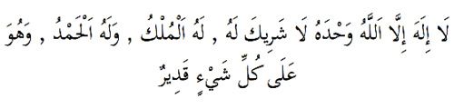

III. Namazın Ardından Okunan Zikirler ve Dualar
Başta namaz olmak üzere bütün ibadetler için şu altın kuralı asla unutmamak gerekir:
İbadetler akılla ve içtihatla belirlenmez. Onları Allah’ın elçisi Efendimiz nasıl yapmış ve öğretmişse öyle yapılırlar. Kimse bir şeyler ekleyerek ya da çıkararak Efendimizden daha güzel ibadet yaptığını iddia edemez. O halde ibadette ölçü; sadece onun yaptıklarını ve onun yaptığı gibi yapmaktır.
Efendimiz çok uzun ve çok çeşitli namazlar kılmış, uzun uzun zikirler yapmıştır. Namazlardan sonra özellikle tavsiye ettiği dua ve zikirlerin bazıları şunlardı:
1. Farz namazlardan selam verilir verilmez üç kez:
Estağfirullah el-Azîm, derlerdi. Anlamı, Yüce Allah’tan bağışlanma dilerim demektir. Namazın arkasından hemen böyle söylenmesi, sanki, biz ne kadar güzel namaz kılarsak kılalım, yine de hakkıyla beceremeyiz ve pak çok hata yaparız. Allahım, sen bizi bağışla, gibi bir anlama gelir.
2. Ardından:
“Allahümme ente’s-Selam ve minke’s-selam tebarakte yâ-ze’l-celali ve’l-ikrâm”.
Anlamı: “Allah’ım, selam sensin, selam sendendir. Sen mübareksin/yücesin. Ey celal/azamet ve ikram sahibi Allahım”.
3. Muğira bin Şube’den rivayet edildiğine göre Efendimiz her namazın arkasından şu zikri de sürekli okurlardı:

Okunuşu: Lâ-ilahe ille’llahu vahdehu lâ-şerike-leh. Lehü’l-mülkü ve lehü’l-hamdü ve-hüve-alâ külli-şey’in Kadîr.
Anlamı: “Allahtan başka ilah yoktur. O tektir, onun ortağı yoktur. Mülk onundur, hamd onadır. O her şeye kadirdir”.
Ebu Hurayra’nın naklettiğine göre Efendimiz şöyle buyurmuştur:
“Kim farz namazlardan sonra 33 kez sübhanellah, 33 kez elhamdülillah, 33 kez Allahü ekber dedikten sonra yüzüncü olarak da bu, lâ-ilahe ille’llahu vahdehu lâ-şerike-leh... zikrini söylerse, günahları denizlerin köpükleri kadar da olsa Allah onları affeder”.
5. Ayete’l-Kürsî:
Ebu Ümâme adlı sahabî Efendimizin naklattiğine göre Hz. Peygamber şöyle buyurmuştur:
“Kim Ayete’l-Kürsî’yi her farz namazın arkasından okursa, cennete girmesinin önündeki tek engel ölümdür”.
Ayete’l-Kürsî’, Kuranı Kerim’de Bakara suresinin 255. Ayetidir. Anlattığı gerçekler sebebiyle Kur’an’ın en büyük ayeti sayılır. Ayetin metnini ve anlamını Fatiha Suresinden sonra verdik.